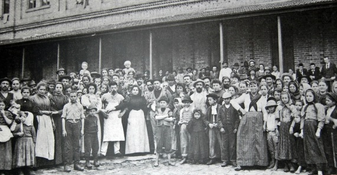

Decreto n.º 19.482, de 12 de dezembro de 1930 - Lei de Nacionalização do Trabalho limitava a entrada de estrangeiros no Brasil.
Conhecido como Lei de Nacionalização do Trabalho, ou Lei dos 2/3. A legislação limitava a entrada de estrangeiros no Brasil e determinava que dois terços das vagas de emprego das “empresas, associações, companhias e firmas comerciais, que explorem, ou não, concessões do Governo Federal ou dos Governos Estaduais e Municipais” deveriam ser ocupadas por brasileiros natos. A “entrada desordenada de estrangeiros” era considerada pelo governo um dos motivos das altas taxas de desemprego, e essa foi uma das primeiras medidas tomadas pelo Ministério do Trabalho, Indústria e Comércio que visava “valorizar o trabalhador brasileiro, muitas vezes, preterido ante o estrangeiro”.